Chapter 9. User profiles, tasks and notifications
This chapter will help you configure user profile details, view and act upon assigned tasks, manage notifications, and view activities based on time and date of occurrence. These essential actions will help you administer the varied responsibilities defined by your role effectively, in line with the aims of the Early Warning, Alert and Response System (EWARS) in various settings.
9.1 Editing a user profile
 An Acc An Acc |
ount Administrator or a Geographical Administrator in EWARS can edit their profiles, tasks and notifications. |
- Click on the profile icon at the top right-hand corner, and the screen below appears:
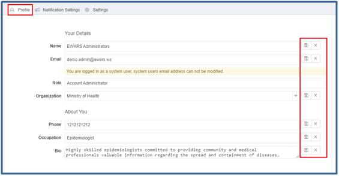
- Edit the relevant fields (such as name, email, role, organization, phone, occupation and bio) > click on the save
 icon to save the changes or click on the close icon to revert to the original text.
icon to save the changes or click on the close icon to revert to the original text.
 Note: Geographical Administrators are able to see the location along with the fields shown above. Note: Geographical Administrators are able to see the location along with the fields shown above. |
9.2 Changing your password
If you want to change your password for security reasons, sign into the system and follow the steps below.
You can customize your password as there are no set rules for it.
- Click on the profile icon > click on
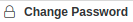
at the top right-hand corner, and the screen below appears:
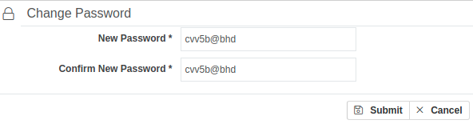
- Enter a New Password > re-enter the password in the Confirm New Password box > click on Submit. The password is changed.
9.3 Changing the EWARS display to your preferred language
EWARS provides multilanguage support. By default, the application is set as English. You can choose a different language from your profile and view the application according to your preferences.
| EWARS |
helps you change the default language to your preferred language; you can thereby interact with the system in your selected language. For example, all notifications and tasks, and the entire interface can be viewed in the preferred language. |
Follow the steps below to change your preferred language.
- Click on the profile icon > click on Settings. By default, this is English, as shown below:
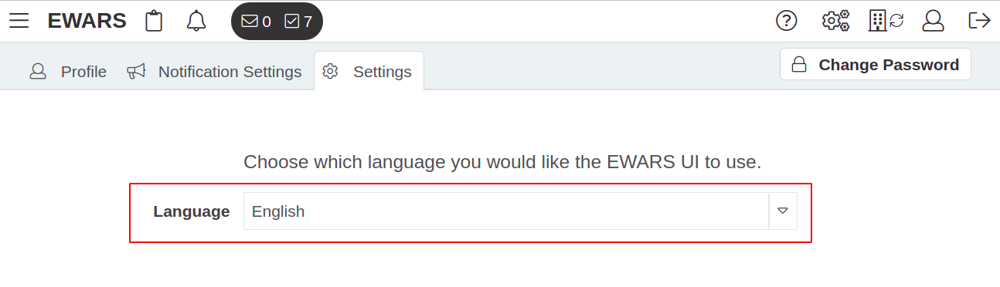
- Select French from the Language drop-down menu, and your EWARS display screen is visible in French, as shown below:
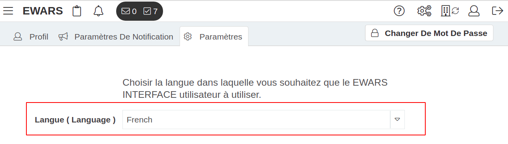
| Note: if you do not see the desired language in the Language drop-down menu, the language needs to be added to the account. To find out more about adding languages, refer to Chapter 10. EWARS account settings, topic 10.6.4 Adding a new language to your account. |
9.4 Enabling two-factor authentication for login
Two-factor authentication is a two-step security process. Users need to verify first by entering their credentials, and then by entering the security code sent to their email address to log into the account. This provides higher security and access control than a login based on email and password alone.
| Note: this feature is not available for users whose accounts are created with system-generated email addresses (ending in @ewars.ws) or for EWARS users working offline. |
To enable two-factor authentication, follow the steps below.
- Select Menu > Users > click on the edit
 icon of the relevant user. Under Account Security, in the Two-factor authentication field, select Active from the drop-down menu.
icon of the relevant user. Under Account Security, in the Two-factor authentication field, select Active from the drop-down menu.
9.5 Assigned tasks under your role
In EWARS, new user registration, reporting assignments, amendments to reports and deletion of reports happen through a systematic approval process. As an administrative user (Account Administrator or Geographical Administrator), you have to manage these tasks if they fall under your geographical administrative area.
A task is created for the Geographical Administrator/Account Administrator whenever a Reporting User requests any of the following:
registration of requests
approval of assignment requests
approval of amendment requests
approval of record deletion requests.
The sections below explain how each task is managed.
9.5.1 Viewing assigned tasks
As an administrative user, the tasks listed above are in your account. Follow the steps below to see what tasks are assigned to you, needing your approval. For EWARS to function successfully, an administrative user should check tasks on a daily basis.
- Click on the
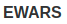
icon at the top left-hand corner > click on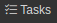
, and all tasks are visible as shown below:
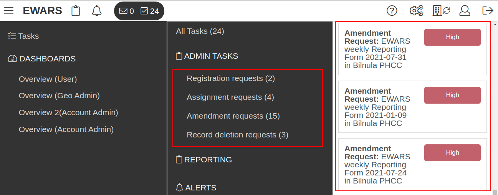
9.5.2 Performing user registration requests
- Click on at the left-hand side of the EWARS home screen > click on Registration requests under ADMIN TASKS > click on any of the Registration requests, and the screen below appears:
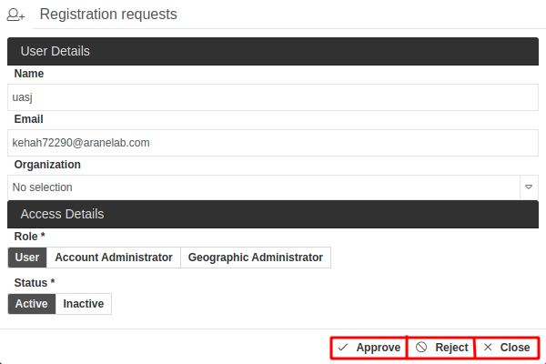
EWARS allows access to the system via an approval process. Any user who needs access is required to request approval, unless the user is created by the Account Administrator (refer to Chapter 8. Users and their assignments for more information).
Read through the request, and review the role of the user. Approve or reject it, according to your needs.
Either click on
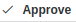
to register the user, and a notification email is sent to the userOr click on
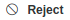
, and the Registration requests dialogue box opens, as shown below:
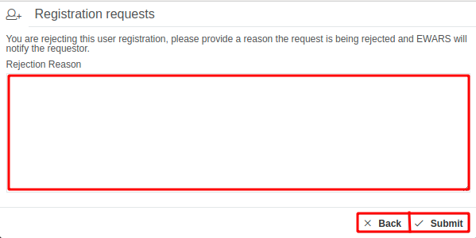
- Provide a reason for rejection > click on
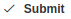
, and a notification email is sent to the user.
9.5.3 Performing assignment requests
This function is used when an assignment is requested by a Reporting User. Assignments for any form require the approval of an Account Administrator.
- Click on at the left-hand side of the EWARS home screen > click on Assignment requests under ADMIN TASKS > click on any of the Assignment requests, and the screen below appears:
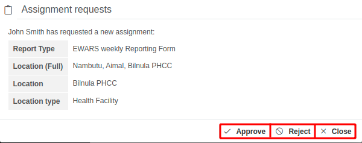
Either click on to approve the request, and a notification email is sent to the user
Or click on > provide a reason for rejection > click on , and a notification email is sent to the user.
9.5.4 Performing amendment requests
This function is used when an amendment of a report is requested by a Reporting User. Amendment of any previously submitted report requires the Account Administrator’s approval only if the approval requirement for amendments is enabled. To enable it, refer to Chapter 6. Forms, topic 6.8.5 Enabling approval requirement for amendments.
- Click on at the left-hand side of the EWARS home screen > click on Amendment requests under ADMIN TASKS > click on any of the Amendment requests, and the screen below appears:
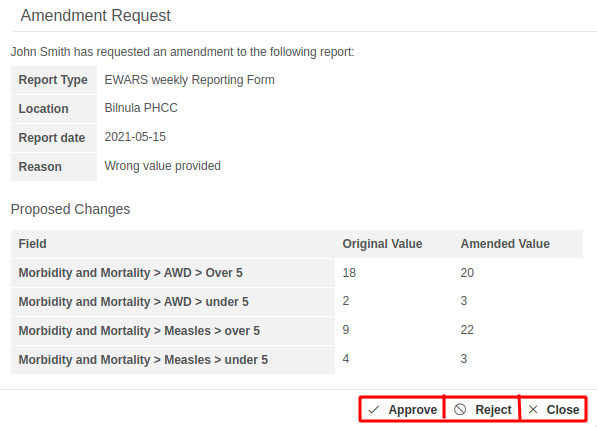
You can view the changes proposed for amendment under the Proposed Changes section.
Either click on to approve the amendment, and a notification email is sent to the user
Or click on > provide a reason for rejection > click on , and a notification email is sent to the user.
9.5.5 Performing record deletion requests
This function can be requested by the Reporting User when he/she has submitted a report that is entirely invalid or incorrect.
- Click on at the left-hand side of the EWARS home screen > click on Record deletion requests under ADMIN TASKS > click on any of the Record deletion requests, and the screen below appears:
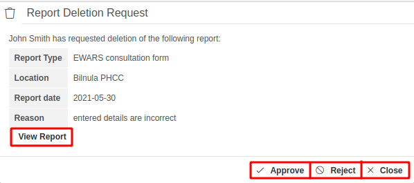
To view the submitted report, follow the steps below.
- Click on , and the report opens in the Report manager menu, as shown below:
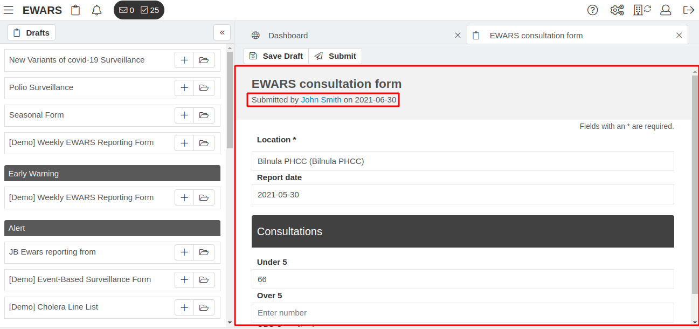
- Either click on to approve the request, and a notification email is sent to the user
- Or click on > provide a reason for rejection > click on , and a notification email is sent to the user.
9.6 Notifications
EWARS can send notifications of alerts and other tasks to administrative users. You can receive notifications when an alert is triggered, an alert is reopened, someone comments on an alert, and an alert is automatically closed due to expiration.
9.6.1 Subscribing to notifications
You can subscribe to receive notifications based on set preferences. Follow the steps below to set the preferences for subscribing to notifications.
- Click on the profile icon > click on the Notification Settings tab, and the screen below appears:
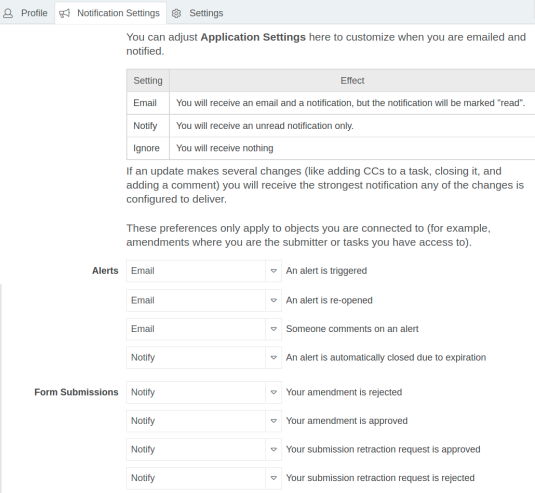
To subscribe to notifications as emails, select Email from the drop-down menu.
To view the notifications in your account, select Notify from the drop-down menu.
To ignore notifications, select Ignore from the drop-down menu.
For demonstration purposes, this guide uses the following two examples.
Example 1. Notify via email whenever any alert is triggered.
- Click on the profile icon > click on the Notification Settings tab > select Email as shown below:
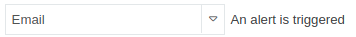
- Whenever an alert is triggered, you will receive an email notification, as shown below:
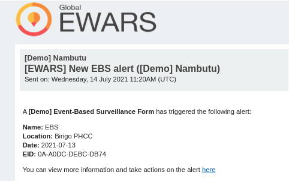
Example 2. View the notification in your account whenever an alert is reopened.
- Click on the profile icon > click on the Notification Settings tab > select Notify as shown below:
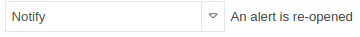
Whenever an alert is reopened, you will receive a system notification in your account. Refer to the following topic for more information.
9.6.2 Viewing and managing system notifications
You can view notifications in EWARS and manage them accordingly. As an administrative user, it is recommended that you check notifications frequently.
To view notifications, follow the steps below.
- Click on the
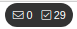
icon at the top left-hand corner > click on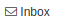
, and the screen below appears:
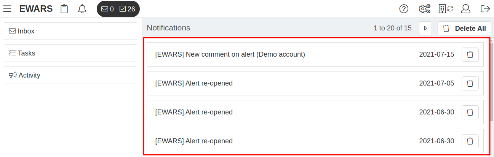
- Click on a notification (e.g. Alert re-opened), and a screen opens with the notification details, as shown below:
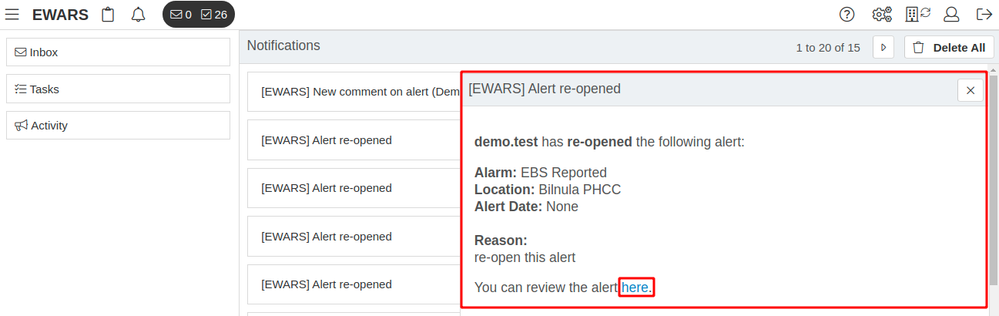
You can also open the alert by clicking on the here link as highlighted in the screenshot above.
To manage notifications, follow the steps below.
To clear a notification, click on the delete
 icon at the right-hand side of the notification, and the notification is deleted.
icon at the right-hand side of the notification, and the notification is deleted.To clear all notifications, click on
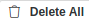
at the top right-hand corner, and all notifications are deleted.
9.6.3 Receiving email notifications in plain text format
By default, you will receive email notifications in HyperText Markup Language (HTML) format, as shown below:
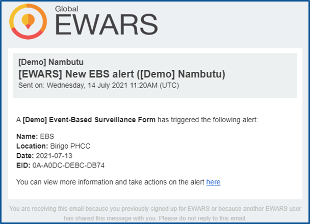
To change the Email Format to plain text, follow the steps below.
- Click on the profile icon > click on the Notification Settings tab. Look for the Email Format field, and the screen below appears:
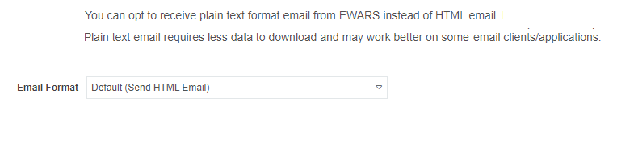
- Select Send plain text email from the drop-down menu. You will see email notifications in a plain text format, as shown below:
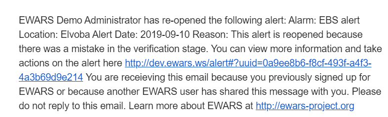
9.6.4 Disabling email notifications
By default, email notifications is enabled. If you disable the function, you will not receive any notification via email, even if you have subscribed to them. However, you will continue to receive administrative emails, such as password reset emails and other task-oriented emails.
| Email |
notifications should be kept enabled for alerts and administrative tasks so that you are made aware rapidly of disease threats requiring a response. |
To disable email notifications, follow the steps below:
- Click on the profile icon > click on the Notification Settings tab > look for the Email Notifications field. By default, Email Notifications is enabled, as shown below:
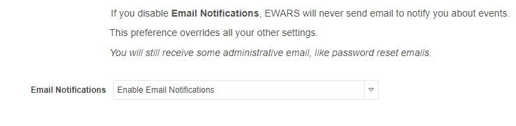
- To disable it, select Disable Email Notifications from the drop-down menu.
9.7 Viewing activities
EWARS keeps track of two types of activities:
new report submissions
new user registrations
You can view these activities along with their date and time of occurrence as follows.
- Click on the icon > click on
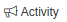
at the left-hand side, and the screen below appears:
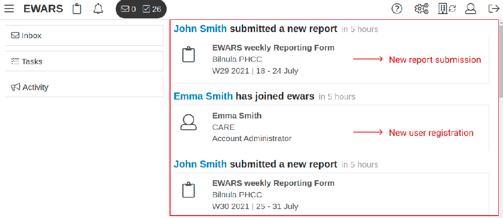
To view submitted reports via the activity feature, follow the steps below.
- Look for a new report submission activity > click on it, and the report opens in the Report manager menu, as shown below:
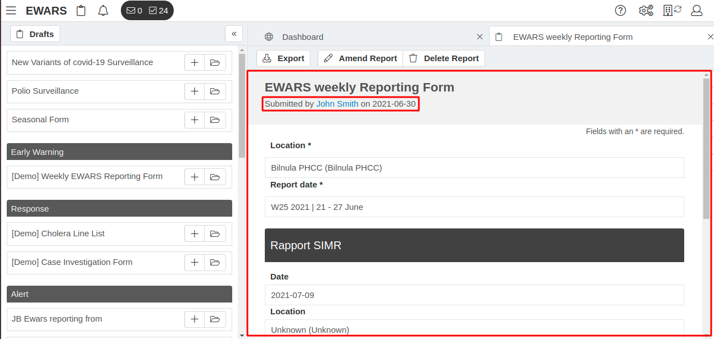
You can view the name of the user and the date of submission.
To view details of a newly joined user in the activity list, follow the steps below.
- Look for new user registration activity > click on it, and the screen below appears:
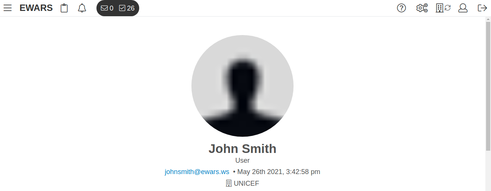
You can view the name of the user, his/her organization, role, date and time of joining, activities and assignments.
The following chapter explains how the Account Administrator helps to manage the EWARS account settings for users.